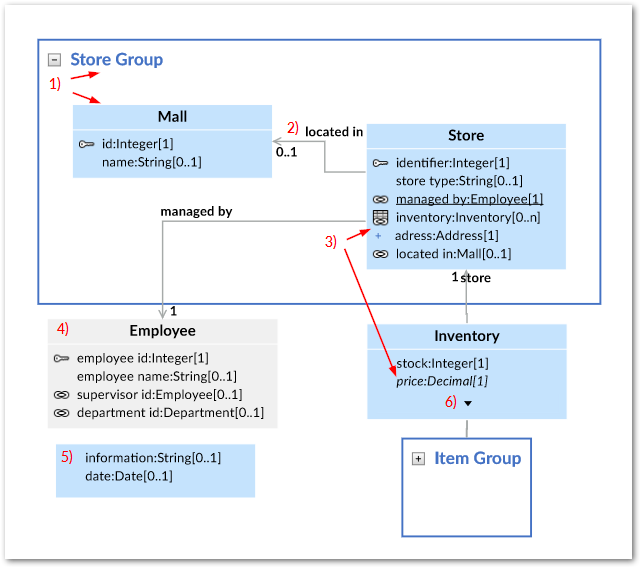
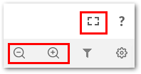
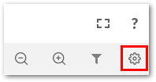
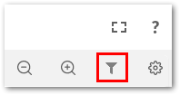
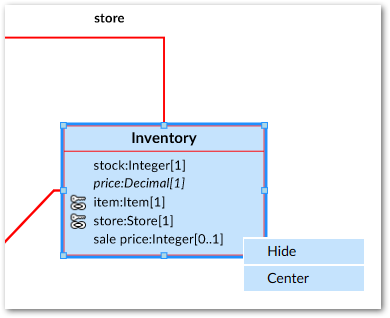
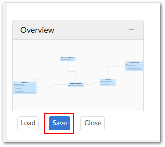
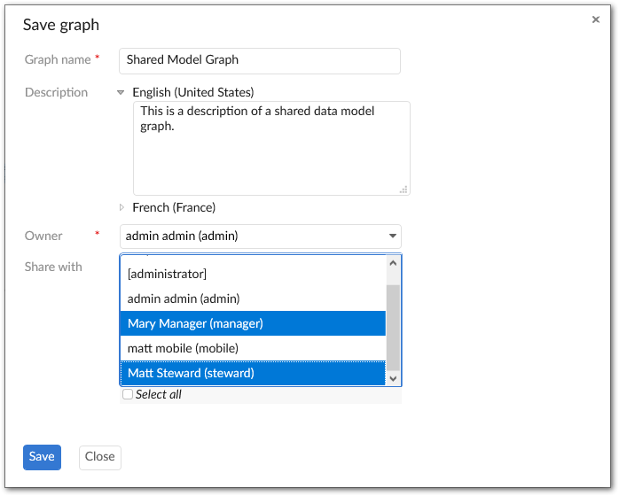

The following sections provide descriptions of what displays in a data model graph and available interactions:
What displays in a graph depends on the model content from which it was generated and the template settings. The following image and table describe data model graph components.
1) Groups and Tables | A box is automatically drawn around components included in a group. You can collapse, expand, re-size and rearrange groups. The bottom-right corner of the image shows a collapsed group. Tables display their labels and fields. Standard DMA icons are used to indicate keys and relationships. |
2) Relationships | Arrows indicate foreign key relationships and their direction. The labels correspond to each foreign key field. |
3) Underlined field, plus icon, and italic fields. | An underlined field belongs to a table located outside of the current dataset. The plus icon next to a field indicates you can expand to display more information, such as when fields are included in a complex type. Fields in italics represent inherited fields. |
4) Table located outside of the current dataset | When a table is located outside of the current dataset, it will be shaded in the graph. The color of the shade is editable in the template. |
5) Orphan fields | Fields that are not part of a table display without a title. |
6) Display additional fields | When a table holds more fields than can display, use the arrow icon to expand/collapse. |
There are several ways in which you can interact with and customize a data model graph. Whether you decide to alter a graph or leave the defaults in place, you have the option to share it with other users. See Sharing a graph for information on sharing graphs. The following table describes what you can do when viewing a data model graph:
Action | Description |
|---|---|
Navigation | You can navigate a graph by:
|
Zooming and fullscreen | The icons at the top of the graph screen allow you to open the graph in a fullscreen view, zoom, and reset to the original magnification.  Use the combination of the Ctrl key and your mouse wheel to zoom in and out. Alternatively, hold down the Ctrl key and press the + and - keys to zoom. |
Arranging graph components | Drag and drop components to arrange them. Once the layout is satisfactory, you can save the graph for re-use. |
Showing/hiding components and changing look | Click the Template icon to open the Graph template configuration window.  Adjust the settings as desired. If you have a question about a property or setting, open its tooltip for more information. Once you are finished, click Save to record your changes to the template. |
Locating and displaying data model elements | Click the filter icon to choose which tables display.  A search bar displays at the top of the filter pane. As you type the name of the asset you are searching for, the list of model elements narrows to only those containing the search term. In addition to searching for a table or field, the filter tab options allow you to show all, hidden, or displayed tables in the dialog box. After selecting or unselecting the desired tables for display, click Apply to propagate your changes. Additionally, you can right click a table and select Hide. |
Exporting a graph | Click Export at the top of the screen to export and download the current graph in either PDF, PNG, or SVG format. |
Resizing | Group boxes automatically resize when you change the arrangement of its components. You can resize tables by clicking to select and dragging anchor points. |
Right-click menu | When you right-click a table, you can hide or center it in the graph.  |
Load, Save, and Close the graph | The buttons below the graph Overview box allow you to save and close the current graph and load a different graph. For information on sharing a saved graph, see the Sharing a graph section below. |
The add-on makes it simple to share saved graphs with other users. The option to share a graph is available when saving. Once you share a graph with a user, it displays from the list of available graphs when they choose to load a graph. Any tables for which a user does not have sufficient permission to view will not display in the shared graph. Unless explicitly defined as such, recipients of a shared graph are not considered its owners. If you neither are an administrator or owner of a graph, you can only save changes to the graph's description. However, if you make other changes that impact the graph, you can save the graph using a different name to keep your changes.
To access the share feature:
Select Save at the bottom of a data model graph.

Provide a name for the graph and optionally include a description.
Optionally, set the graph's owner. By default, you are considered the graph's owner. However, you can use the Owner property to specify another profile as owner. Note that administrators can also edit graph owners.
Use the Share with box to select one or more users/roles with whom to share the graph.

Permissions for shared graphs behave as you would probably expect. Without sufficient permissions graph elements do not display. Even if you have permission to view a table that was hidden in a graph shared with you, it does not display. You would have to generate a new graph of the model to display it. If permission to view a graph element is revoked after receiving a shared graph, the impacted element does not display.